Computes pooled median survival Kaplan-Meier estimates using Rubin's rule and outputs corresponding Kaplan-Meier curve across imputed and matched/weighted datasets
Usage
km_pooling(
x = NULL,
surv_formula = stats::as.formula(survival::Surv(fu_itt_months, death_itt) ~ treat)
)Value
list with pooled median survival estimate and pooled Kaplan-Meier curve
km_median_survival:
strata = stratum
t_median = median survival time
t_lower = lower 95% CI of median survival time
t_upper = upper 95% CI of median survival time
km_survival_table:
strata = stratum
time = observed time point
m = number of imputed datasets
qbar = pooled univariate estimate of the complementary log-log transformed survival probabilities, see formula (3.1.2) Rubin (1987)
t = total variance of the pooled univariate estimate of the complementary log-log transformed survival probabilities, formula (3.1.5) Rubin (1987)
se = total standard error of the pooled estimate (derived as sqrt(t))
surv = back-transformed pooled survival probability
lower = Wald-type lower 95% confidence interval of back-transformed pooled survival probability
upper = Wald-type upper 95% confidence interval of back-transformed pooled survival probability
km_plot: ggplot2 object with Kaplan-Meier curve
Details
The function requires an object of class mimids or wimids (x), which is the output
of a workflow that requires imputing multiple (m) datasets using mice or amelia
and matching or weighting each imputed dataset via the MatchThem package
(see examples).
The function fits the pre-specified survfit model (surv_formula, survfit package)
to compute survival probabilities at each individual time point according to the Kaplan-Meier method.
For matched and weighted datasets, weights, cluster membership (matching only) and robust
variance estimates are considered in the survfit call by default.
Since survival probabilities typically don't follow normal distributions,
these need to be transformed to approximate normality first before pooling
across imputed datasets and time points. To that end, survival probabilities are first
transformed using a complementary log-log transformation (log(-log(1-pr(surv))))
as recommended by multiple sources (Marshall, Billingham, and Bryan (2009)).
To pool the transformed estimates across imputed datasets and time points, the pool.scalar function is used to apply Rubin's rule to combine pooled estimates (qbar) according to formula (3.1.2) Rubin (1987) and to compute the corresponding total variance (t) of the pooled estimate according to formula (3.1.5) Rubin (1987).
The pooled survival probabilities are then back-transformed via 1-exp(-exp(qbar))
for pooled survival probability estimates and 1-exp(-exp(qbar +/- 1.96*sqrt(t)))
for lower and upper 95% confidence intervals. As the formula indicates, the pooled standard
error is computed as the square root of the total variance. The vertically stacked table
with transformed and backtransformed estimates is returned with the
km_survival_table table.
Finally, the median survival time is extracted from the km_survival_table table
by determining the time the survival probability drops below .5 for the first time.
For this a sub-function of Terry M. Therneau's print.survfit function
is used. Therneau also considers some edge cases/nuisances (x = time, y = surv):
Nuisance 1: if one of the y's is exactly .5, we want the mean of the corresponding x and the first x for which y<.5. We need to use the equivalent of all.equal to check for a .5 however: survfit(Surv(1:100)~1) gives a value of .5 + 1.1e-16 due to roundoff error.
Nuisance 2: there may by an NA in the y's
Nuisance 3: if no y's are <=.5, then we should return NA
Nuisance 4: the obs (or many) after the .5 may be censored, giving a stretch of values = .5 +- epsilon
The function follows the following logic:
Fit Kaplan-Meier survival function to each imputed and matched/weighted dataset
Transform survival probabilities using complementary log-log transformation
Pool transformed survival probabilities and compute total variance using Rubin's rule
Back-transform pooled survival probabilities and compute 95% confidence intervals
Extract median survival time and corresponding 95% confidence intervals
Plot Kaplan-Meier curve with pooled survival probabilities and confidence intervals
More references:
https://stefvanbuuren.name/fimd/sec-pooling.html
https://link.springer.com/article/10.1007/s10198-008-0129-y
https://bmcmedresmethodol.biomedcentral.com/articles/10.1186/s12874-015-0048-4
Examples
library(encore.analytics)
library(mice)
library(MatchThem)
# simulate a cohort with 1,000 patients with 20% missing data
data <- simulate_data(
n = 500,
imposeNA = TRUE,
propNA = 0.2
)
# impute the data
set.seed(42)
mids <- mice(data, m = 5, print = FALSE)
#> Warning: Number of logged events: 801
# fit a propensity score model
fit <- as.formula(treat ~ dem_age_index_cont + dem_sex_cont + c_smoking_history)
# weight (or alternatively match) patients within each imputed dataset
wimids <- weightthem(
formula = fit,
datasets = mids,
approach = "within",
method = "glm",
estimand = "ATO"
)
#> Estimating weights | dataset: #1
#> #2
#> #3
#> #4
#> #5
#>
# fit a survival model
km_fit <- as.formula(survival::Surv(fu_itt_months, death_itt) ~ treat)
# estimate and pool median survival times and Kaplan-Meier curve
km_out <- km_pooling(
x = wimids,
surv_formula = km_fit
)
# median survival time
km_out$km_median_survival
#> # A tibble: 2 × 4
#> strata t_median t_lower t_upper
#> <fct> <dbl> <dbl> <dbl>
#> 1 treat=0 16.7 14.0 19.6
#> 2 treat=1 20.5 17.7 24.3
# KM curve
km_out$km_plot
